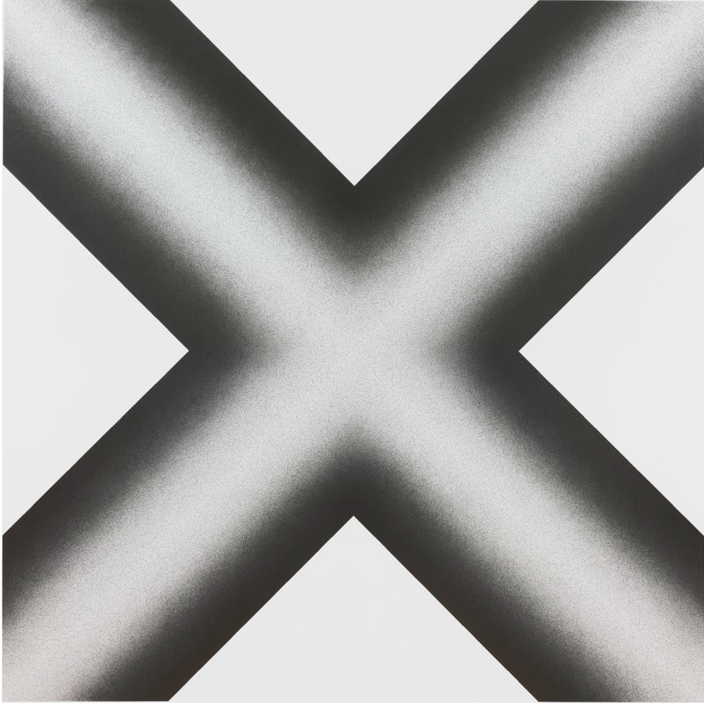
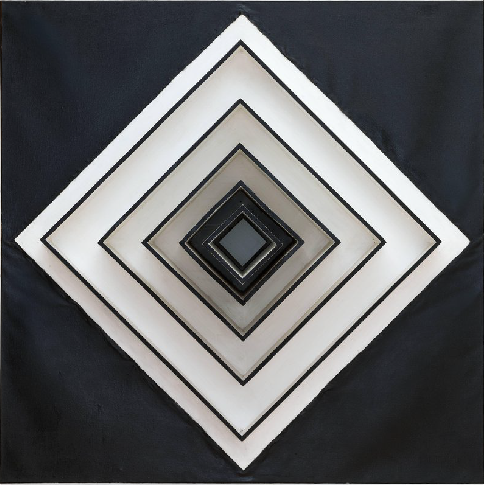
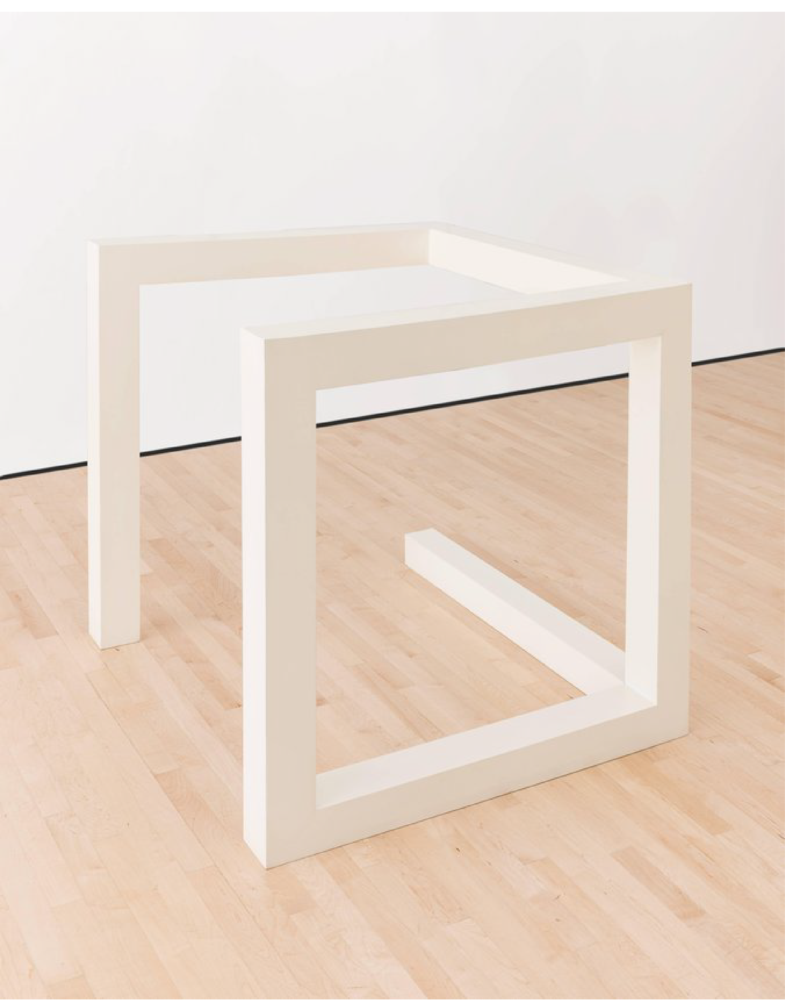
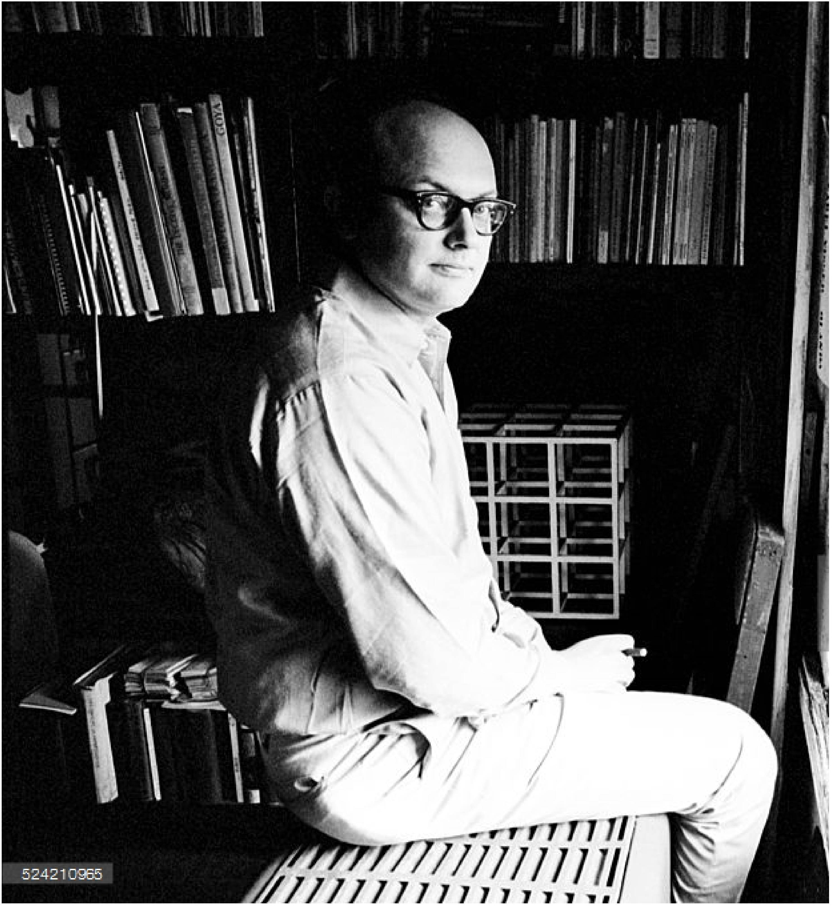

Wall Drawing 1247
Sol LeWitt | August 2007
Drawing
Graphite on wall
108 in. x 108 in.
(274.32 cm x 274.32 cm)

Wall Structure
Sol LeWitt | 1963
Painting
Wood, paint, and canvas
61 1/4 in. x 61 1/4 in. x 25 3/4 in.
(155.58 cm x 155.58 cm x 65.41 cm)

Incomplete Open
Cube 8/11
Sol LeWitt | 1974
sculpture
aluminum and enamel paint
42 in. x 42 in. x 42 in.
(106.68 cm x 106.68 cm x 106.68 cm)

Sol LeWitt
A Wall Drawing Retrospective comprises 105 of LeWitt’s large-scale wall drawings, spanning the artist’s career from 1969 to 2007. These occupy nearly an acre of specially built interior walls that have been installed—per LeWitt’s own specifications—over three stories of a historic mill building situated at the heart of MASS MoCA’s campus. The 27,000-square-foot structure, known as Building #7, has been fully restored for the exhibition by Bruner/Cott & Associates architects, which has closely integrated the building into the museum’s main circulation plan through a series of elevated walkways, a dramatic new vertical lightwell, and new stairways.